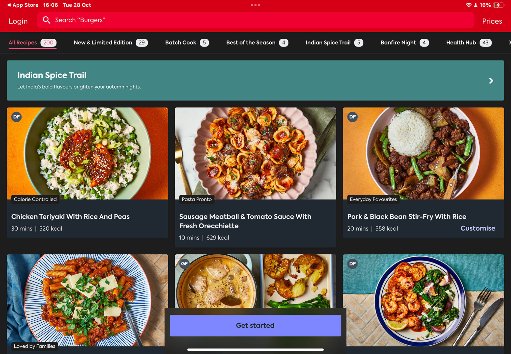
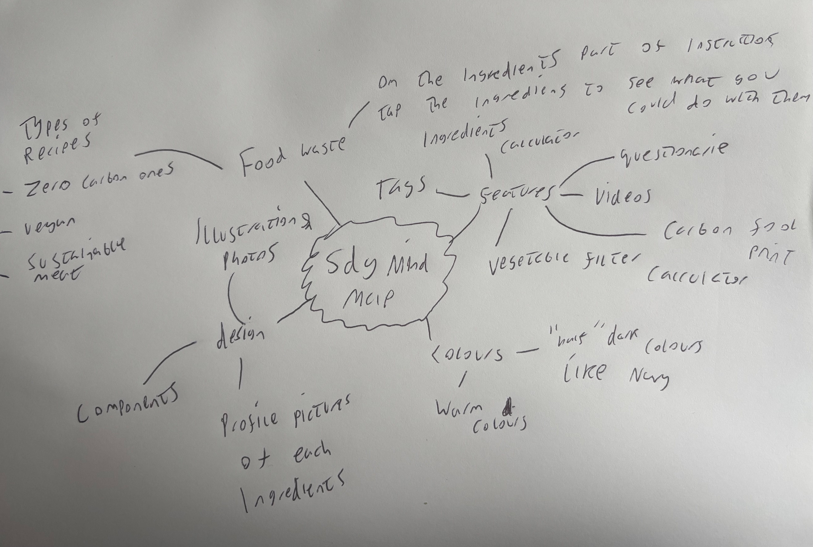
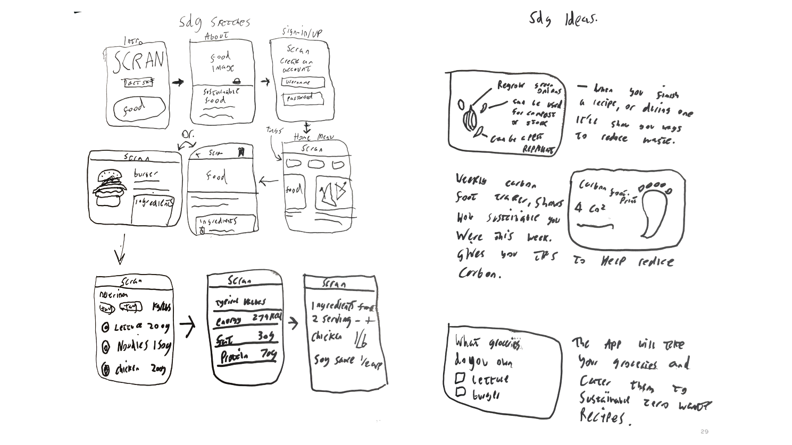
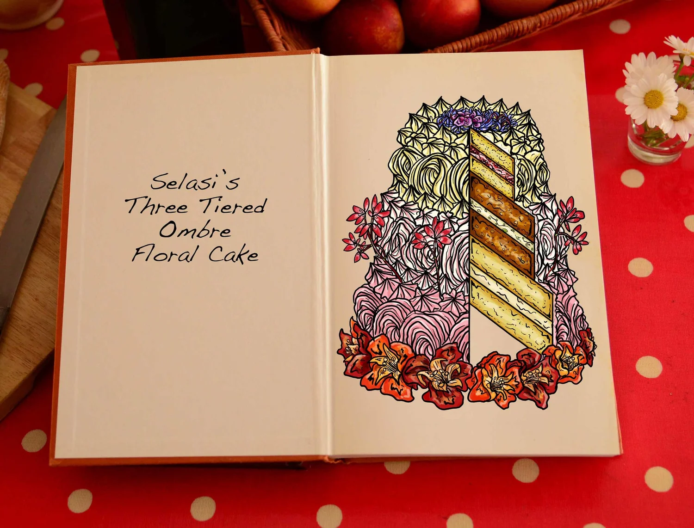
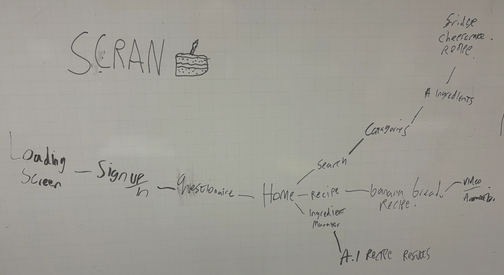
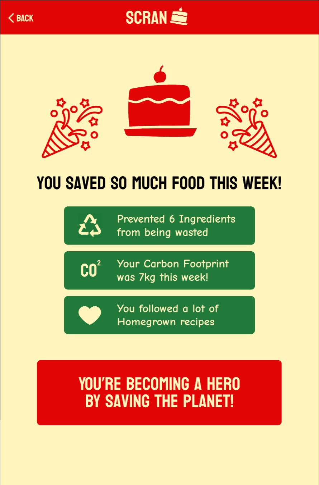

Scran
The sustainable baking app for kids
Summary Of Project
Scran is a playful, illustrated baking app that helps children cut down on food waste. Built around the UN’s Zero Hunger goal, it mixes simple recipes, a cheeky helper called Sue Chef, and a look inspired by The Great British Bake Off.
Contents
Project Specifications
-
9 weeks (autumn 2025), plus redevelopment afterwards.
-
Software: Figma, Illustrator and After Effects.
-
Designed for an 11-inch iPad.
-
Target audience: 8–14 year olds, with adult supervision.
-
UN goal: Zero Hunger, through reducing food waste.
-
Role: solo project.
-
AI use: how AI was (and wasn’t) used.
The Brief
In 2015, every UN member state adopted the 2030 Agenda for Sustainable Development. At its heart are 17 Sustainable Development Goals (SDGs), an urgent call for countries to work together on everything from clean water to climate action.
Our brief was to design an interactive digital experience that communicates one or more of these goals in a clear, engaging way. Over nine weeks, we had to deliver:
- A branded home screen
- One SDG, designed specifically for a 10-year-old audience
- A style guide
- A working prototype, made in Figma
The catch? The SDGs are written for adults. They’re text-heavy and abstract, which leaves out children, the people who will be living with these goals the longest. Habits formed early tend to stick, so if kids can learn sustainable habits through play rather than walls of text, a goal like Zero Hunger becomes something they can actually act on.
Finding the Idea
After reading the brief and looking through a few examples, I jotted down some quick ideas, each tackling a different goal:
- Zero Hunger: a cookbook app that shows how to prevent food waste, such as turning onion scraps into seasoning.
- Sustainable Cities and Communities: a city-planner game that reviews how sustainable your city is and explains why. Fun, but scanning a whole city would have been a nightmare to build in Figma.
- No Poverty: a stockbroker game where your decisions affect both the world and your wallet.
In the end, the cookbook won. There was room for a great brand, and I could genuinely see it growing into a real app that promotes sustainability.
Research
Cookbook apps
Off to the App Store I went. After downloading the highest-rated cookbook apps, I screenshotted every feature I liked:
- BBC Good Food: saving recipes for later, and filtering out vegetables you dislike (I’ll admit, I hate cauliflower). Small, but genuinely accessible.
- Gousto: a picture for every ingredient, a portion calculator, nutritional facts, and tags like “gluten free” that make searching easy.
- Tasty: an onboarding questionnaire (are you vegetarian?), video recipes, and a calculator that tells you exactly how much to buy, so less food goes to waste.

A similar case study
While researching, I came across a UX case study by Rebecca that tackled sustainable eating through vegan alternatives, whereas Scran focuses on food waste. She clearly did her homework: a target audience sheet before designing, wireframes before screens, and a carbon footprint calculator that motivated users with positive statistics. The first two went straight into my own process.
Naming the app
Naming the app took a long list, from FoodCycle and Loop Kitchen to ReHeat and Savethepeels. One stood out straight away: Scran, slang for food, and only one letter away from “scrap”. I really love that one.


Designing for Children
Then came a curveball. Rereading the brief in class, I noticed the audience was children, and everything I had planned was built for adults: a retro style aimed at young adults, and recipes that involved frying and sharp knives.
Scrapping the cookbook was tempting, but after talking it through with Kyle, I kept the idea and changed three things:
- Baking, not frying. Banana bread is far safer for a 10-year-old than frying an egg.
- A new visual style, inspired by The Great British Bake Off’s illustrations, Paddy Donnelly’s children’s books, Cath Kidston’s patterns and the cookbook Kids Can Bake.
- More research, added on top of what I had, rather than starting again.
Drawing every illustration by hand would have taken ages, so to get that Bake Off look, I photographed the food and ran it through Illustrator’s Image Trace on low-fidelity settings.

Meet Sophie Baker
To keep every decision grounded in the audience, I wrote a persona for Sophie Baker (get it?), a 10-year-old from Northern Ireland who loves The Great British Bake Off.
- Goals: bake simple recipes like banana bread on her own, and use up leftovers.
- Frustrations: cooking apps with complicated text, dangerous steps, and plain, boring visuals.
- Needs: bright illustrations, step-by-step visual guides, safe baking tasks, and encouragement when she finishes a recipe.
“I love baking cakes like the ones on Bake Off! It’s fun when I can do it myself and help the planet too.”

The Style Guide
Colour
The palette comes straight from the Bake Off set and its illustrations: warm, friendly colours that feel like a kitchen.
Typography
For the logo and headings, I chose Bayon. It only comes in uppercase, which sounds like a flaw, but bold capitals are actually easier for children who are still learning to read. Comic Sans was genuinely tempting for the body text, but adults use the app too, so I settled on Comic Neue: still playful, but far more readable. OpenDyslexic is also noted as an option for readers with dyslexia.
Logo
My first logo sketches crammed in far too many icons, so I simplified to one icon beside the wordmark. The three alternatives could even swap in as a loading animation.
Components and tone of voice
Using Gousto and BBC Good Food as a guide, I rebuilt the components I’d need in Figma, with proper click animations and variants in portrait and landscape for an 11-inch iPad. The tone of voice is warm, playful and educational, and the guide itself is written for the designers who would use it.

Designing the Screens
Before designing anything, I mapped out the user flow as a wireframe, then sketched each screen in more detail.

Loading screen
Remember the loading screens on children’s PS2 games, where the text pulsed and bounced? I borrowed that. The Scran icon jumps up and down while the background colour and icon change.
Sign-up and questionnaire
My first sign-up page was boring enough to depress any child, so I spiced it up with a background video, cut together from stock footage of families baking. It took ages, and it still feels a little mature, so it’s a screen I’d revisit with some illustrations.
The questionnaire asks just three things: your name, your baking level and the food you like. If a long form puts me off, it’s even worse for a child, so it takes 5 to 10 seconds, with a little animation each time you answer.
Home screen
Looking back at my first draft of the home screen, I made the tags tappable, made the recipes scroll horizontally, and added the button I’d forgotten: the ingredient manager.
Sue Chef
The ingredient manager needed a better name. Children type in the leftovers they have at home, and the app suggests recipes that use them up: the heart of the Zero Hunger idea. Meet Sue Chef. Yes, it should be “sous”, and yes, he has a moustache, a nod to an old Johnny Cash song. In my opinion, it’s funny. Hover over him and he even winks.
Recipes and cooking steps
The recipe screen takes inspiration from BBC Good Food and Gousto, with tags that help adults judge time, difficulty and allergens. Nutritional information sits behind a drop-down, because calorie counts can be too much for children. The cooking steps looked a little plain at first, so I added an icon for each stage, like a whisk for mixing: a kid-friendly reminder of where you are.
Redevelopment
By late November, Scran was essentially finished, but I wasn’t ready to let it go just yet. I really like the idea, so I kept developing it alongside my other projects:
- This Week in Review: a screen showing how sustainable you were this week, with encouraging explanations of why it helps the planet. I left out stars and emojis to stay on brand.
- A focaccia recipe: a second full recipe, proving the system works beyond banana bread.
- A bigger role for Sue Chef: teaching more about sustainability, and appearing across the app, a little like Microsoft’s Clippy.
- An icon page in the style guide.

Outcome
The final Scran prototype takes a child from a bouncing loading screen through a three-question setup to a seasonal home screen. Recipes are broken into big, illustrated, swipeable steps, and Sue Chef turns leftovers into recipe ideas.
Every major decision traces back to Sophie: safe baking tasks, readable type, bright illustrations, encouraging messages, and nutritional details tucked away for adults.
Try the prototype
Tap through Scran below, just as Sophie would on an iPad.
AI Transparency
Where AI was used: I used AI to help draft the Sophie Baker persona, then edited it and checked my decisions against it throughout the project.
Where it wasn’t: the illustrated look was not AI-generated. I made it from my own photographs using Illustrator’s Image Trace. The research, style guide, screens and prototype are my own work.
Worth separating: Sue Chef is a feature within the app concept, not a tool I used to design it.
Reflection
Scran changed how I approach design problems. Instead of starting with a visual style, I started with the user’s needs, which made the outcome more purposeful. Pivoting from adults to children mid-project taught me that lesson the hard way.
Research shaped almost every screen. Studying real cookbook apps and designing within realistic constraints made Scran feel like a legitimate product. It also showed me that good UX is usually about removing friction, not adding features, which matters even more when the user is ten.
It also sharpened my eye for hierarchy, spacing and content order. My early drafts were fun but cluttered, and refining them gave Scran consistent, readable layouts that flow far better.
If I could take it further, I’d run user testing with children in the age group, design a landscape layout, and add a dyslexia-friendly font option such as OpenDyslexic. Overall, I’m really happy with how Scran turned out.
Read my notes on Notion (opens in a new tab)